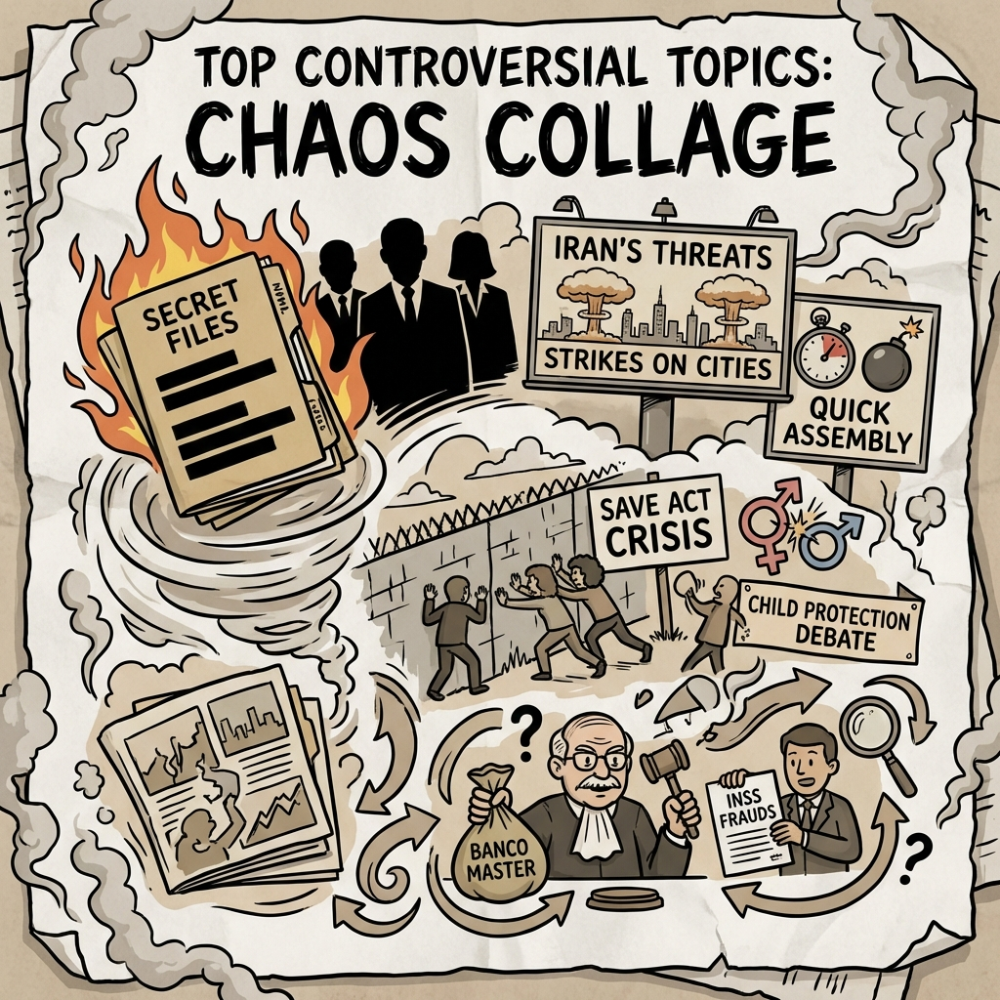

The Daily Globe: Epstein Files Redactions and Cover-Ups, Trump Administration and Epstein Prosecutions, and Banco Master Scandal Involving STF
Published on 2026-02-13

World
- Epstein Files Redactions and Cover-Ups
Newly released documents reveal connections to elites like Steve Bannon and Bill Gates; outrage over Trump admin redactions protecting powerful figures.
- Iran's Nuclear Program Escalation
Iran displays billboards threatening nuclear strikes on Israel and claims ability to build a bomb in 24 hours, sparking global security fears.
- Calls for Prosecuting Epstein Clients
High-profile posts demand accountability for Epstein's network, criticizing delays in releasing full files.
USA
- Trump Administration and Epstein Prosecutions
Accusations that Trump is burying Epstein cases; links to immigration, Iran, and transgender issues in priority rankings.
- SAVE Act and Immigration Crisis
Debates over 40M undocumented immigrants impacting jobs/housing; push for voter ID and border security.
- Transgender Issues and Shooter Incident
Controversy around transgender rights, child protections, and recent incidents fueling conservative backlash.
Brazil
- Banco Master Scandal Involving STF
PF requests Justice Toffoli's recusal in major financial scandal linked to Supreme Court ministers.
- Dias Toffoli's History of Scandals
Senator Alessandro Vieira calls for CPI amid Toffoli's repeated controversies.
- INSS Fraud and Judicial Corruption
Ongoing pension frauds and criticisms of CNJ's failure to address STF scandals.
Topic Index
- epstein-coverup
- iran-nuclear-threat
- nuclear-escalation
- elite-prosecutions
- us-immigration-crisis
- save-act
- transgender-issues
- brazil-stf-scandal